Timeline data: choosing and combining series
Every variant draws real series from the database (59, pulled 2026-10-11) with the same rules, so they differ only in how you find, name and arrange them. The reasoning, rules and a recommendation are in README.md.
- Search starts from news words. “taxes”, “jobs report”, “tax the rich”, “liberation day” lead to a topic, its meanings, and the one series the news usually means.
- Charts form themselves. Series measured alike share a chart; others stack on the same dates; the page says why.
- On, hidden, removed. Hidden series stay in view, struck through, keeping their colour.
- Frequency is visible. D / W / M / Q / Y / FY badges; yearly and quarterly values drawn as levels across their period; each value printed with its own period.
Round 3: AC.1
A.1.1 and C.1.1 combined: the search and catalogue across the top, the chart and lanes below. Names read as a phrase.
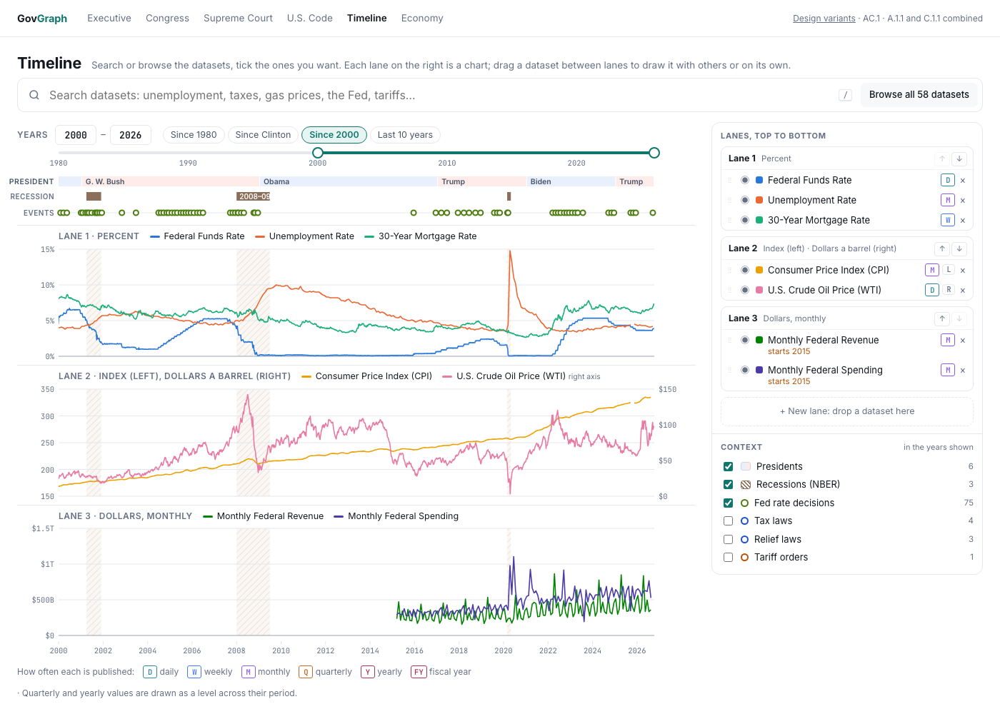
Search at the top opens the catalogue of every dataset; ticking one puts it in the lane it fits, said beside it (“→ lane 3”).
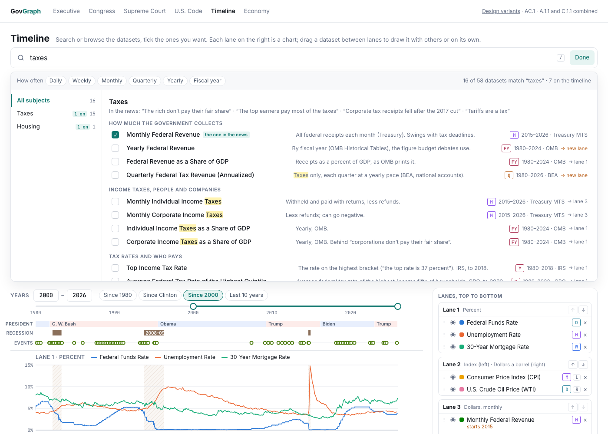
The catalogue open over the page, filtered; Done or Esc closes it.
Build by structure: D, E, F (2026-10-13)
Browse and Build as separate tabs. Build walks a structure (Statistical Abstract or CAP's policy topics, switchable) down to its subsections, fully nested, with a filter over names and datasets; choosing a subsection lists every dataset under it.
- D.1 Wide tree, down to the measure — D with a third level (category → subcategory → measure); the measure opens the app’s own Build choices. No codes.
- D. Wide tree — the whole nested structure as a 440px left column, empty subsections grey or hidden.
- E. Map, then focus — the whole structure across the panel in columns; choosing folds it into a column beside the datasets.
- F. Filter first — a large filter with suggested words; the tree starts folded to what holds data and opens on matches.
Build mode navigation by the Statistical Abstract (2026-10-13)
The measure list on the left of Build mode, regrouped by the 2012 Abstract's 30 sections and their subsections, in book order. Today's 27 measures placed as a proposal.
- Option A. Contents — one rail, section → subsection → measure, folding; “With data” or “All 30”.
- Option B. Section index — sections in the rail; the panel lists the section's subsections with their measures as cards, empty ones in grey; a measure opens the builder.
Build mode: three ways to choose by dimension (2026-10-13)
Choosing in Build mode should never switch an earlier choice back and forth. Each concept runs on the real GDP and unemployment datasets (switch on the left). All three close with what every dataset shares, then years, then source.
- A. Nested — each option indented under the one it depends on; options that don't apply are never on screen. Label: “Measured as”.
- B. Cascade — flat rows read top down; each offers only what exists above it; shared single options chosen for you; partial ones say “rate only”. Reads as a phrase: “GDP as a growth rate”.
- C. Grid — the datasets as a table of combinations, the gaps marked “not published”; tick cells, rows or columns.
Round 2: A.1 and C.1
A as a catalogue of every dataset, C with its lanes reworked: no sparklines or coverage bars, a year range, recessions labelled and hatched instead of grey. Each comes in two naming conventions (NAMING.md): .1.1 reads as a phrase (“Monthly Individual Income Taxes”), .1.2 measure: detail (“Individual Income Taxes: Monthly”). The switch at the top right of each page flips between them.
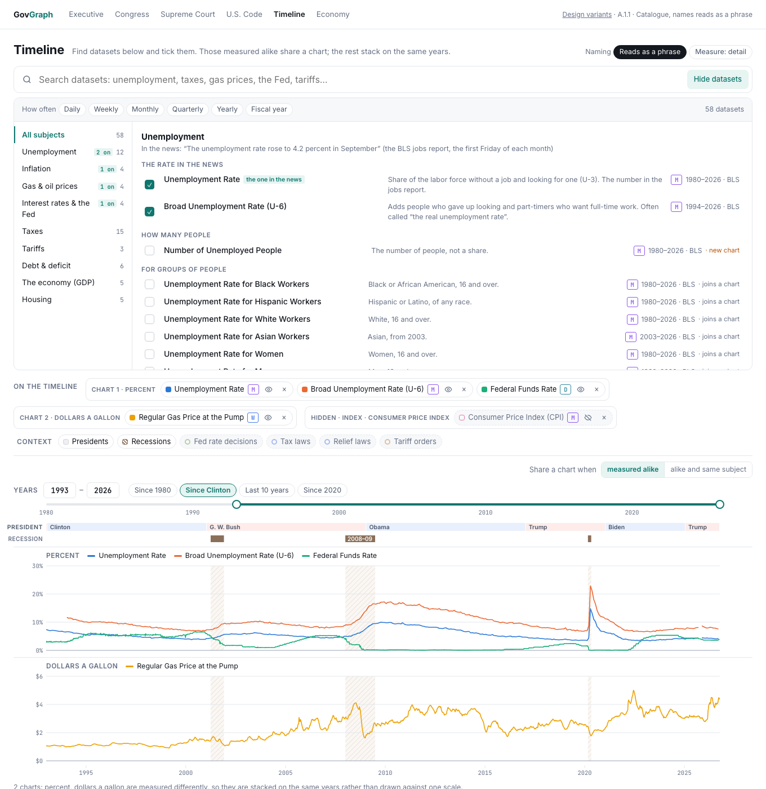
Search over a catalogue of all datasets by subject and meaning, filters by frequency; tray; year range.
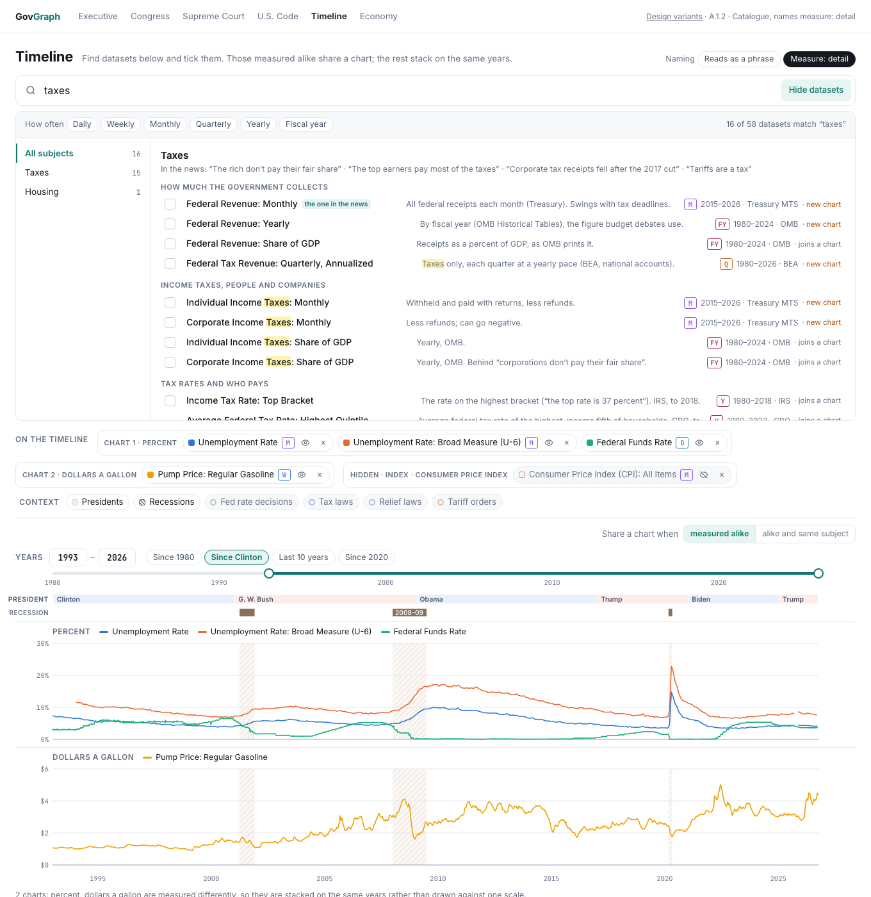
The same page, names measure-first. Opened on a search for “taxes”.
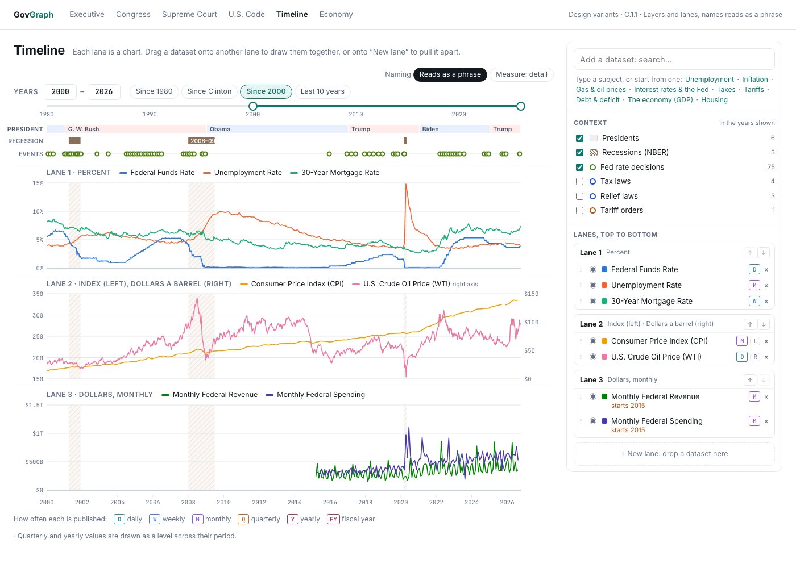
Lanes say their scales, can be reordered, and say when a dataset doesn’t cover the years shown; context with counts.
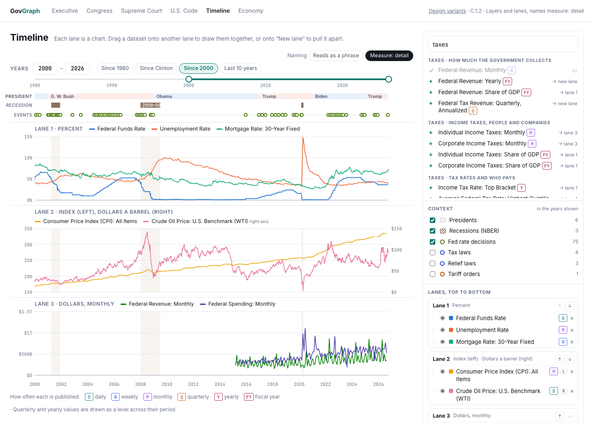
The same page, names measure-first. Search results grouped by meaning.
Round 1
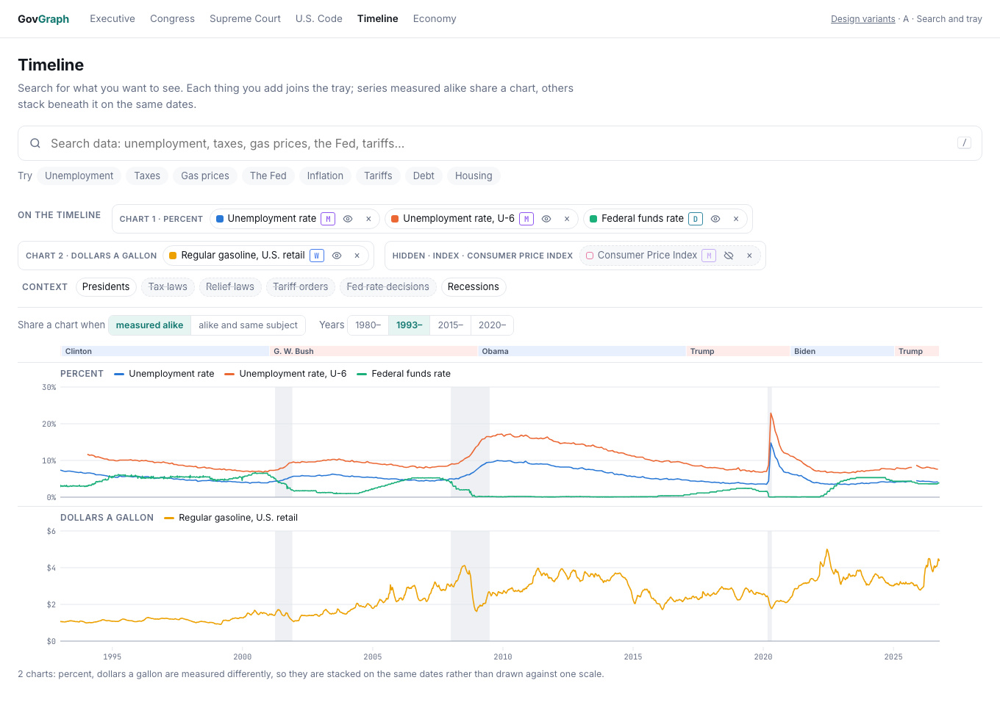
A search field across the top opening a panel of answers; chips bundled per chart. Closest to the brief.
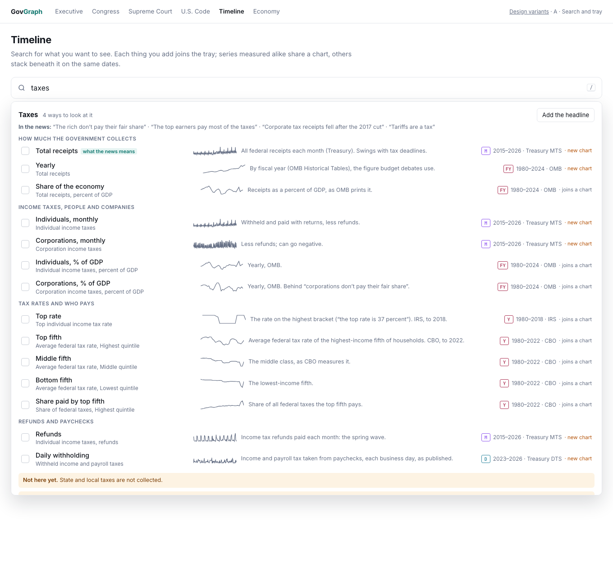
Each meaning with its series, sparkline, frequency, and whether it joins a chart or starts one.
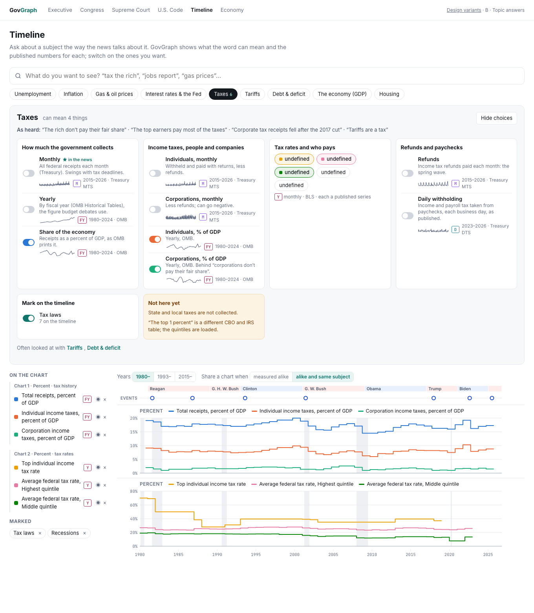
Meaning first: an answer sheet of cards per topic, “Not here yet”, events to mark; a rail grouped per chart.
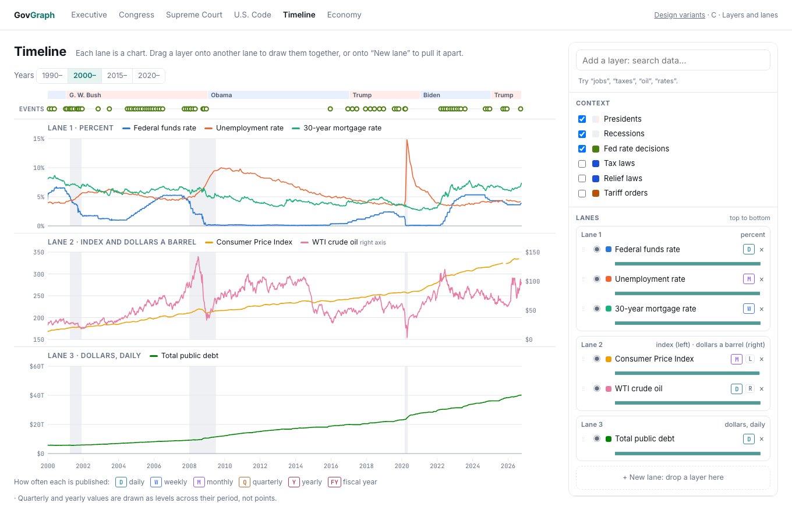
A layer panel: drag a series between lanes; second scale or refusal shown as you drag; coverage bars.
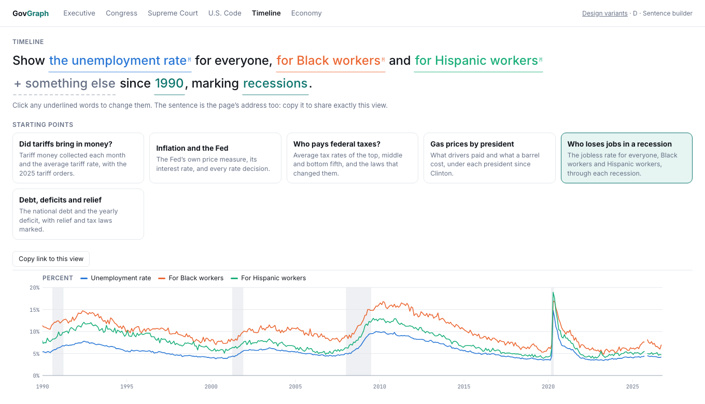
The view written as a sentence with editable phrases, and starting points that load a whole question.